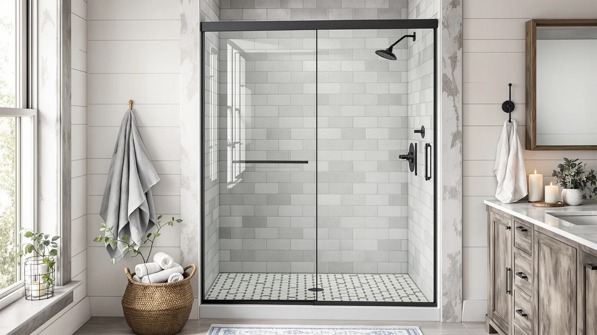

How to Clean Shower Doors (2026)
Prices and picks verified as of August 2026. Independent, reader-supported reviews.


Things to Know Before You Buy
- Soap scum and hard water spots come off easiest with a vinegar-based solution left to sit for five to ten minutes before you scrub.
- A squeegee pass after every shower prevents most of the buildup a weekly deep clean has to remove.
- Abrasive powders and razor blades can scratch tempered glass permanently, so skip them even on stubborn spots.
- The track collects grit and mildew a squeegee never touches, so it needs its own pass with a toothbrush.
- If mineral buildup keeps returning within days, hard water in your home is the real cause, not your cleaning routine.
How to clean shower doors comes down to breaking up soap scum and hard water spots with the right solution before they harden into a permanent haze on the glass. Most of what looks like a stained or etched door is layered mineral buildup that a proper vinegar soak and a squeegee routine can undo without any harsh chemicals.
We compared vinegar-based routines against store-bought glass cleaners and cross-checked the results with verified owner reviews from people dealing with hard water buildup on frameless and framed doors alike. Below is the five-step process, the supplies worth keeping under the sink, and a few researched picks for when a door has scratched or clouded glass that cleaning alone won't fix.
What You'll Need
- Supplies: white vinegar, dish soap, microfiber cloths
- Tools: spray bottle, a squeegee
Step 1: Mix a vinegar-based cleaning solution
Combine equal parts white vinegar and warm water in a spray bottle. The mild acid in vinegar breaks down the calcium and magnesium deposits that make up hard water spots and the fatty residue in soap scum, and it does it without the scratching risk that comes with abrasive powders or scouring pads.
For doors with heavier buildup, skip the dilution and use vinegar straight from the bottle. The stronger concentration cuts through weeks of layered residue faster, though you should still rinse it off promptly once the glass looks clear.
Step 2: Spray the glass and let it sit
Coat both sides of the door evenly, including the corners near the frame where soap tends to collect first. Give the solution five to ten minutes of contact time before you touch the glass. That wait matters more than the scrubbing that follows, since it's what softens the mineral crust rather than only wetting the surface.
On a door that hasn't been cleaned in a month or longer, extend the soak to fifteen minutes and lay a vinegar-soaked cloth directly over the worst spots. Owners who deal with hard water report that this targeted soak clears stains a quick spray alone won't touch.
Step 3: Scrub away soap scum and hard water spots
Work a non-abrasive sponge or a microfiber cloth over the glass in small circles, starting at the top and moving down. Add a few drops of dish soap to your sponge for spots with greasy residue from body wash or shampoo, since vinegar alone doesn't cut through oil as well as it dissolves mineral buildup.
For hard water spots that resist the sponge, press a folded microfiber cloth against the stain and hold it there for another minute before scrubbing again. Never reach for a razor blade or a metal scrubber on tempered glass. Both leave scratches that catch soap scum faster than the surface they were meant to clean.
Step 4: Rinse and squeegee the glass dry
Rinse the door thoroughly with warm water to clear away the loosened residue and any leftover soap. Water left standing on the glass after rinsing is exactly what forms new hard water spots as it evaporates, so this step needs to happen right away.
Pull a squeegee from the top of the door to the bottom in one continuous motion, wiping the blade dry between passes. A squeegee removes nearly all the standing moisture that mineral deposits need to form. Do it after every shower, not just once a week during the deep clean, and the glass stays clear between washes.
Step 5: Clean the tracks, seals, and hardware
Spray the vinegar solution directly into the door track and along any rubber seals, then scrub with an old toothbrush to dislodge the grit, hair, and mildew that build up out of sight. Tracks trap standing water more than any other part of the door, which makes them the spot most likely to grow mildew even when the glass looks spotless.
Wipe down metal hardware, including hinges, handles, and rollers, with a dry microfiber cloth rather than leaving vinegar to sit on them. Prolonged contact with vinegar can dull chrome and brass finishes over time, so a quick wipe after rinsing protects the hardware while still clearing away splash residue.
Common Mistakes to Avoid
The most common mistake people make when learning how to clean shower doors is reaching for an abrasive scrubber or a razor blade on tough hard water spots. Tempered glass scratches more easily than it looks, and a scratched surface collects soap scum faster than an intact one, which turns a one-time cleaning shortcut into a permanent problem.
Skipping the soak time is another frequent misstep. Spraying vinegar and scrubbing immediately forces you to work harder against mineral deposits that would have softened on their own with five more minutes of patience. The wait does most of the work that scrubbing gets credit for.
Letting the glass air-dry instead of squeegeeing it undoes the whole routine within a day. Water that evaporates on its own leaves behind the same mineral traces you spent twenty minutes removing, so the door looks clean but starts collecting spots again the next day.
Ignoring the track is the last mistake that keeps a shower door looking dirty even after a thorough glass cleaning. Mildew and grit trapped in the track can work their way onto the glass edges and the door seal, and no amount of glass polishing fixes a problem that's actually coming from the track underneath.
Our Top Picks
If your door's glass is etched, chipped, or scratched from years of hard water rather than simply dirty, no amount of cleaning will bring back a clear finish. These are the frameless shower doors we'd look at for a replacement, based on fit and what verified buyers report after installing them.

Editor’s Pick
ENSO SENKA 56-60" W x
A straightforward frameless swap for 56 to 60 inch openings. Reviewers consistently note the rollers stay smooth well past the first year, which matters once you're replacing a door instead of cleaning one.
$259.99
Check Price on Amazon
Best Value
ENSO SENKA 56-60” W x
Thicker tempered glass panels than the base model, a detail owners say makes the door feel sturdier in daily use and hold its clarity longer between deep cleans.
$499.00
Check Price on Amazon
Premium Choice
ENSO SENKA 56-60" W x
A low-profile track that collects less standing water than a deep-channel design, which means less mildew buildup between the weekly cleaning routine above.
$329.00
Check Price on AmazonFrequently Asked Questions
How often should you clean shower doors to prevent buildup?
Wipe the glass down after every shower with a squeegee and run the full vinegar routine once a week. That pace keeps soap film and mineral deposits from hardening into a haze that takes real scrubbing to remove.
Does vinegar damage shower door glass or seals?
Plain white vinegar diluted with water is safe for tempered glass and most rubber or vinyl seals when it's rinsed off within a few minutes. Leaving it undiluted on metal hardware for long stretches can dull the finish, so rinse promptly and avoid soaking chrome or brass trim.
What removes hard water stains from shower glass fast?
A vinegar-soaked microfiber cloth pressed against the stain for ten minutes softens mineral deposits enough to wipe away with light pressure. For stains that have built up over months, a paste of baking soda and water adds mild abrasion without scratching the glass.
Can you use a magic eraser on shower doors?
A melamine sponge can lift light soap scum, but it's a mild abrasive and repeated use can dull the glass over time. Save it for the toughest spots that the vinegar soak doesn't fully clear, rather than using it as your default scrubber.
How do you keep shower doors clean between washes?
Squeegee the glass immediately after every shower while it's still wet. Owners who make this a habit report going weeks between deep cleans, since removing standing water is what stops most soap scum and hard water spots from forming in the first place.
Verdict
How to clean shower doors comes down to a routine you repeat, not a single deep scrub you do once and forget. A vinegar-based spray, five to ten minutes of soak time, and a squeegee pass after every shower handle the soap scum and hard water spots that turn glass hazy over time. Skip the abrasive scrubbers and razor blades, since a scratched surface only collects grime faster than one you left alone. Don't forget the track either, since mildew hiding there undoes a spotless glass panel within days. If the glass itself is etched or chipped beyond what cleaning can fix, an ENSO SENKA frameless replacement is worth a look before you spend another weekend fighting stains that were never coming out. For most bathrooms, though, the five steps above are all it takes to keep a shower door looking clear between washes.